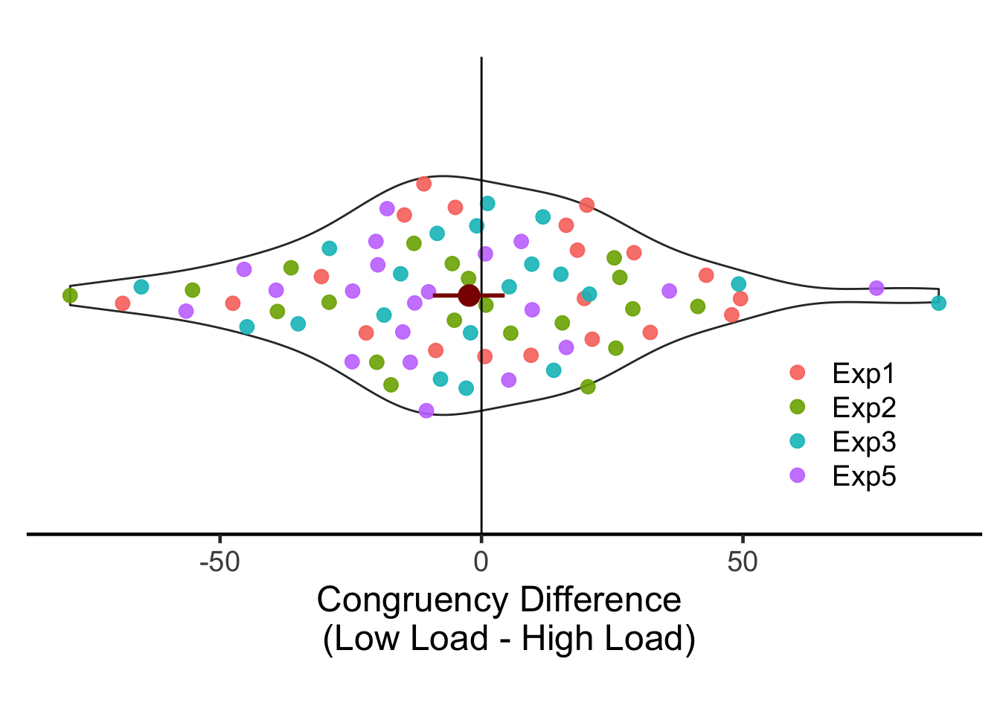
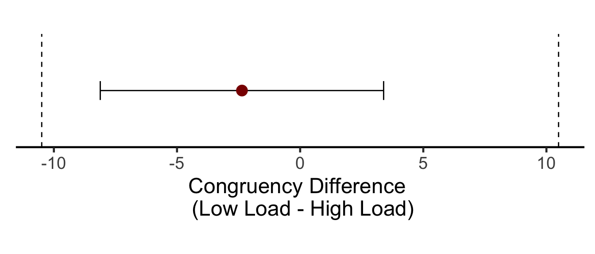

set.seed(12345) # for reproducibility
# Some packages need to be loaded. We use `pacman` as a package manager, which takes care of the other packages.
if (!require("pacman", quietly = TRUE)) install.packages("pacman")
pacman::p_load(tidyverse, TOSTER, pwr, Hmisc, BayesFactor, ggbeeswarm)
pacman::p_load_gh("RLesur/klippy")
# pacman::p_load_gh("crsh/papaja", "thomasp85/patchwork")
options(knitr.kable.NA = '')
options(dplyr.summarise.inform=FALSE) # 200603 supress warning in regards to regrouping
klippy::klippy()We combined data from Experiment 1~3 and 5. Since each experiment recruited 20 participants, there were 80 participants total.
# Exp 1
E1 <- read.csv("data/data_vstmAS1.csv", header = T) %>%
select(SN, vstmLoad, Congruency, RT, Targ, Resp, vstmCond, vstmResp) %>%
mutate(SN = SN + 100,
Corr = ifelse(Targ==Resp,1,0),
vstmCorr = ifelse(vstmCond==vstmResp,1,0),
RT = RT*1000) %>%
filter(Corr==1 & vstmCorr==1 & RT > 200) %>%
group_by(SN) %>%
nest() %>%
mutate(lbound = map(data, ~median(.$RT)-2.5*mad(.$RT)),
ubound = map(data, ~median(.$RT)+2.5*mad(.$RT))) %>%
unnest(lbound, ubound) %>%
unnest(data) %>%
mutate(Outlier = (RT < lbound)|(RT > ubound), Exp = 1) %>%
filter(Outlier == FALSE) %>%
ungroup %>%
select(Exp, SN, vstmLoad, Congruency, RT)
## Warning: unnest() has a new interface. See ?unnest for details.
## Try `df %>% unnest(c(lbound, ubound))`, with `mutate()` if needed
# Exp 2
E2 <- read.csv("data/data_vstmAS2.csv", header = T) %>%
select(SN, vstmLoad, Congruency, RT, Targ, Resp, vstmCond, vstmResp) %>%
mutate(SN = SN + 200,
Corr = ifelse(Targ==Resp,1,0),
vstmCorr = ifelse(vstmCond==vstmResp,1,0),
RT = RT*1000) %>%
filter(Corr==1 & vstmCorr==1 & RT > 200) %>%
group_by(SN) %>%
nest() %>%
mutate(lbound = map(data, ~median(.$RT)-2.5*mad(.$RT)),
ubound = map(data, ~median(.$RT)+2.5*mad(.$RT))) %>%
unnest(lbound, ubound) %>%
unnest(data) %>%
mutate(Outlier = (RT < lbound)|(RT > ubound), Exp = 2) %>%
filter(Outlier == FALSE) %>%
ungroup %>%
select(Exp, SN, vstmLoad, Congruency, RT)
## Warning: unnest() has a new interface. See ?unnest for details.
## Try `df %>% unnest(c(lbound, ubound))`, with `mutate()` if needed
# Exp 3
E3 <- read.csv("data/data_vstmAS3.csv", header = T) %>%
select(SN, vstmLoad, Congruency, RT, Targ, Resp, vstmCond, vstmResp) %>%
mutate(SN = SN + 300,
Corr = ifelse(Targ==Resp,1,0),
vstmCorr = ifelse(vstmLoad==1,1,ifelse(vstmCond==vstmResp,1,0)),
RT = RT*1000) %>%
filter(Corr==1 & vstmCorr==1 & RT > 200) %>%
group_by(SN) %>%
nest() %>%
mutate(lbound = map(data, ~median(.$RT)-2.5*mad(.$RT)),
ubound = map(data, ~median(.$RT)+2.5*mad(.$RT))) %>%
unnest(lbound, ubound) %>%
unnest(data) %>%
mutate(Outlier = (RT < lbound)|(RT > ubound), Exp = 3) %>%
filter(Outlier == FALSE) %>%
ungroup %>%
select(Exp, SN, vstmLoad, Congruency, RT)
## Warning: unnest() has a new interface. See ?unnest for details.
## Try `df %>% unnest(c(lbound, ubound))`, with `mutate()` if needed
# Exp 5
E5 <- read.csv("data/data_vstmAS5.csv", header = T) %>%
select(SN, vstmLoad, Congruency, RT, Targ, Resp, vstmCond, vstmResp) %>%
mutate(SN = SN + 500,
Corr = ifelse(Targ==Resp,1,0),
vstmCorr = ifelse(vstmCond==vstmResp,1,0),
RT = RT*1000) %>%
filter(Corr==1 & vstmCorr==1 & RT > 200) %>%
group_by(SN) %>%
nest() %>%
mutate(lbound = map(data, ~median(.$RT)-2.5*mad(.$RT)),
ubound = map(data, ~median(.$RT)+2.5*mad(.$RT))) %>%
unnest(lbound, ubound) %>%
unnest(data) %>%
mutate(Outlier = (RT < lbound)|(RT > ubound), Exp = 5) %>%
filter(Outlier == FALSE) %>%
ungroup %>%
select(Exp, SN, vstmLoad, Congruency, RT)
## Warning: unnest() has a new interface. See ?unnest for details.
## Try `df %>% unnest(c(lbound, ubound))`, with `mutate()` if needed
TT <- rbind(E1, E2, E3, E5)
TT$SN <- factor(TT$SN)
TT$Exp <- factor(TT$Exp, levels=c(1,2,3,5), labels=c("Exp1","Exp2","Exp3","Exp5"))
TT$vstmLoad <- factor(TT$vstmLoad, levels=c(1,2), labels=c("LowLoad","HighLoad"))
TT$Congruency <- factor(TT$Congruency, levels=c(0,1), labels=c("Incongruent","Congruent"))
# Description of raw data columns.
# 1. Exp: experiment 1~3, 5
# 2. SN: participant ID. Exp 1 = 1XX, Exp 2 = 2XX, Exp 3 = 3XX, Exp 5 = 5XX
# 3. vstmLoad: VSTM load. 1 = low, 2 = high
# 4. Congruency: 0 = incongruent, 1 = congruent
# 5. RT: response time in millisecond
glimpse(TT)
## Rows: 14,926
## Columns: 5
## $ Exp <fct> Exp1, Exp1, Exp1, Exp1, Exp1, Exp1, Exp1, Exp1, Exp1, Exp1…
## $ SN <fct> 101, 101, 101, 101, 101, 101, 101, 101, 101, 101, 101, 101…
## $ vstmLoad <fct> LowLoad, LowLoad, LowLoad, LowLoad, LowLoad, LowLoad, High…
## $ Congruency <fct> Incongruent, Incongruent, Incongruent, Congruent, Congruen…
## $ RT <dbl> 845.0, 922.5, 944.8, 823.5, 753.2, 851.6, 941.9, 946.2, 95…
# Congruency effect, subject-level, long format
T2CEslong <- TT %>% group_by(Exp, SN, vstmLoad, Congruency) %>%
summarise(M = mean(RT)) %>%
ungroup() %>%
spread(Congruency, M) %>%
mutate(cEffect = Incongruent - Congruent) %>%
select(Exp, SN, vstmLoad, cEffect)
# Congruency effect, subject-level, wide format
T2CEswide <- T2CEslong %>%
spread(key = vstmLoad, value = cEffect) %>%
mutate(Diff = LowLoad - HighLoad,
Dummy = "Dummy")
temp <- Hmisc::smean.cl.boot(T2CEswide$Diff)
ggplot(T2CEswide, aes(x=Dummy, y=Diff)) +
# geom_hline(aes(yintercept=mean(Diff)), lty=1, size=8, col = alpha("#a6d8f0", 0.5)) +
geom_violin(width = 0.6, trim=TRUE) +
ggbeeswarm::geom_quasirandom(aes(colour = Exp), size = 3, alpha = 0.9, width = 0.3) +
geom_hline(aes(yintercept=0), lty=1) +
stat_summary(fun.data="mean_cl_boot", shape=19, colour="darkred", size = 1,
position=position_dodge(0.9)) +
coord_flip() +
labs(y = "Congruency Difference \n (Low Load - High Load)") +
theme_classic(base_size = 18) +
theme(axis.line.y = element_blank(),
axis.text.y = element_blank(),
axis.ticks.y = element_blank(),
axis.title.y = element_blank(),
legend.title = element_blank(),
legend.position = c(0.85, 0.25),
aspect.ratio = .5)
We calculated the difference in congruency effects between low load vs. high load conditions for each participant. The results plotted above show that the difference values are distributed evenly around zero. The global mean was -2.36 and 95% bootstrapped CI was [-8.99, 4.06] (shown in dark red).
Low load와 high load의 congruency effect를 NHST t-test로 비교하였다.
##
## Paired t-test
##
## data: T2CEswide$LowLoad and T2CEswide$HighLoad
## t = -0.68357, df = 79, p-value = 0.4962
## alternative hypothesis: true difference in means is not equal to 0
## 95 percent confidence interval:
## -9.243561 4.517638
## sample estimates:
## mean of the differences
## -2.362962NHST는 통계적으로 유의미하지 않았다.
Simonsohn의 제안(링크 필요)에 따라, 원래 실험에서 검증력이 33%인 효과 크기를 계산한다. Konstantinou, Beal, King, Lavie(2014, APP) 실험에서 실험 1b의 참가자 수는 N=22. 따라서,
## [1] 0.3393938효과크기 d=0.3394보다 작은 효과는 효과가 없다고 할 수 있다. 재현에 필요한 표본의 크기는 효과크기 d=0.3394에서 검증력이 80% 이상인 참가자 수이다.
required_N = TOSTER::powerTOSTpaired(alpha = .05, statistical_power = .8,
low_eqbound_dz = -E33$d, high_eqbound_dz = E33$d)## The required sample size to achieve 80 % power with equivalence bounds of -0.3393938 and 0.3393938 is 75 pairs최소 75명이 필요하다.
tm <- TOSTpaired(n = 80, r12 = cor(T2CEswide$LowLoad, T2CEswide$HighLoad),
m1 = mean(T2CEswide$LowLoad), m2 = mean(T2CEswide$HighLoad),
sd1 = sd(T2CEswide$LowLoad), sd2 = sd(T2CEswide$HighLoad),
low_eqbound_dz = -E33$d, high_eqbound_dz = E33$d, alpha=.05,
plot = FALSE)
## TOST results:
## t-value lower bound: 2.35 p-value lower bound: 0.011
## t-value upper bound: -3.72 p-value upper bound: 0.0002
## degrees of freedom : 79
##
## Equivalence bounds (Cohen's dz):
## low eqbound: -0.3394
## high eqbound: 0.3394
##
## Equivalence bounds (raw scores):
## low eqbound: -10.4936
## high eqbound: 10.4936
##
## TOST confidence interval:
## lower bound 90% CI: -8.116
## upper bound 90% CI: 3.39
##
## NHST confidence interval:
## lower bound 95% CI: -9.244
## upper bound 95% CI: 4.518
##
## Equivalence Test Result:
## The equivalence test was significant, t(79) = 2.352, p = 0.0106, given equivalence bounds of -10.494 and 10.494 (on a raw scale) and an alpha of 0.05.
##
##
## Null Hypothesis Test Result:
## The null hypothesis test was non-significant, t(79) = -0.684, p = 0.496, given an alpha of 0.05.
##
##
## Based on the equivalence test and the null-hypothesis test combined, we can conclude that the observed effect is statistically not different from zero and statistically equivalent to zero.
##
tm2 <- tm %>% plyr::ldply(data.frame) %>%
spread(1, 2) %>%
mutate(Dummy = "Dummy")
ggplot(data=tm2, aes(x=Dummy, y=diff, ymin=LL_CI_TOST, ymax=UL_CI_TOST)) +
geom_errorbar(width = 0.2) +
geom_point(color = "darkred", size = 4) +
# geom_linerange(size=8, colour="#a6d8f0") +
# geom_point(size=3, shape=21, fill="#008fd5", colour = "white", stroke = 1) +
coord_flip(ylim = c(tm2$low_eqbound, tm2$high_eqbound)) +
geom_hline(yintercept = c(tm2$high_eqbound, tm2$low_eqbound),
linetype = "dashed") +
labs(y = "Congruency Difference \n (Low Load - High Load)") +
theme_classic(base_size = 18) +
theme(axis.line.y = element_blank(),
axis.text.y = element_blank(),
axis.ticks.y = element_blank(),
axis.title.y = element_blank(),
aspect.ratio = .2)
The equivalence test was significant, t(79) = 2.352, p = 0.0106, given equivalence bounds of -10.494 and 10.494 (on a raw scale) and an alpha of 0.05. The null hypothesis test was non-significant, t(79) = -0.684, p = 0.496, given an alpha of 0.05. Based on the equivalence test and the null-hypothesis test combined, we can conclude that the observed effect is statistically not different from zero and statistically equivalent to zero.
베이지언 분석은 참가자수를 미리 정할 필요가 없으므로 모두 합쳐서 BF를 계산하는 데 문제가 없다.
## Bayes factor analysis
## --------------
## [1] Alt., r=0.707 : 0.1543606 ±0%
##
## Against denominator:
## Null, mu = 0
## ---
## Bayes factor type: BFoneSample, JZS## Bayes factor analysis
## --------------
## [1] Null, mu=0 : 6.478336 ±0%
##
## Against denominator:
## Alternative, r = 0.707106781186548, mu =/= 0
## ---
## Bayes factor type: BFoneSample, JZSsessionInfo()
## R version 4.0.2 (2020-06-22)
## Platform: x86_64-apple-darwin17.0 (64-bit)
## Running under: macOS High Sierra 10.13.6
##
## Matrix products: default
## BLAS: /Library/Frameworks/R.framework/Versions/4.0/Resources/lib/libRblas.dylib
## LAPACK: /Library/Frameworks/R.framework/Versions/4.0/Resources/lib/libRlapack.dylib
##
## locale:
## [1] en_US.UTF-8/en_US.UTF-8/en_US.UTF-8/C/en_US.UTF-8/en_US.UTF-8
##
## attached base packages:
## [1] stats graphics grDevices utils datasets methods base
##
## other attached packages:
## [1] klippy_0.0.0.9500 ggbeeswarm_0.6.0 BayesFactor_0.9.12-4.2
## [4] Matrix_1.2-18 coda_0.19-3 Hmisc_4.4-1
## [7] Formula_1.2-3 survival_3.2-3 lattice_0.20-41
## [10] pwr_1.3-0 TOSTER_0.3.4 forcats_0.5.0
## [13] stringr_1.4.0 dplyr_1.0.2 purrr_0.3.4
## [16] readr_1.3.1 tidyr_1.1.2 tibble_3.0.3
## [19] ggplot2_3.3.2 tidyverse_1.3.0 pacman_0.5.1
##
## loaded via a namespace (and not attached):
## [1] fs_1.5.0 lubridate_1.7.9 RColorBrewer_1.1-2
## [4] httr_1.4.2 tools_4.0.2 backports_1.1.10
## [7] utf8_1.1.4 R6_2.4.1 rpart_4.1-15
## [10] vipor_0.4.5 DBI_1.1.0 colorspace_1.4-1
## [13] nnet_7.3-14 withr_2.2.0 tidyselect_1.1.0
## [16] gridExtra_2.3 compiler_4.0.2 cli_2.0.2
## [19] rvest_0.3.6 htmlTable_2.1.0 xml2_1.3.2
## [22] labeling_0.3 scales_1.1.1 checkmate_2.0.0
## [25] mvtnorm_1.1-1 pbapply_1.4-3 digest_0.6.25
## [28] foreign_0.8-80 rmarkdown_2.3 base64enc_0.1-3
## [31] jpeg_0.1-8.1 pkgconfig_2.0.3 htmltools_0.5.0
## [34] dbplyr_1.4.4 htmlwidgets_1.5.1 rlang_0.4.7
## [37] readxl_1.3.1 rstudioapi_0.11 farver_2.0.3
## [40] generics_0.0.2 jsonlite_1.7.1 gtools_3.8.2
## [43] magrittr_1.5 Rcpp_1.0.5.2 munsell_0.5.0
## [46] fansi_0.4.1 lifecycle_0.2.0 stringi_1.5.3
## [49] yaml_2.2.1 plyr_1.8.6 grid_4.0.2
## [52] blob_1.2.1 parallel_4.0.2 crayon_1.3.4
## [55] haven_2.3.1 splines_4.0.2 hms_0.5.3
## [58] knitr_1.29 pillar_1.4.6 reprex_0.3.0
## [61] glue_1.4.2 evaluate_0.14 latticeExtra_0.6-29
## [64] data.table_1.13.0 modelr_0.1.8 png_0.1-7
## [67] vctrs_0.3.4 MatrixModels_0.4-1 cellranger_1.1.0
## [70] gtable_0.3.0 assertthat_0.2.1 xfun_0.17
## [73] broom_0.7.0.9001 beeswarm_0.2.3 cluster_2.1.0
## [76] ellipsis_0.3.1